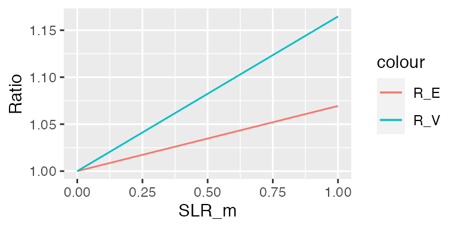
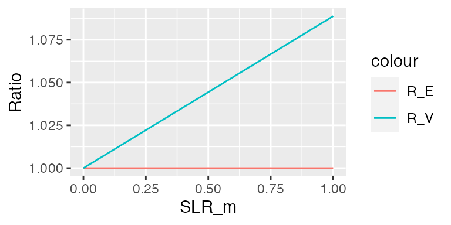

salinity-sea-level-rise.RmdPreviously, the salinity model was defined as: \[\frac{dC}{dt} = - a Q_H (C - C_U) + b e^{-dQ_H}(C_D - C)\,.\] This model contains appropriate parameters \(a\), \(b\), and \(d\) for calibration. However, the model was originally derived via control volume as: \[\frac{dC}{dt} = - \frac{Q_C}{V} (C - C_U) + \frac{Q_E}{V} (C_D - C)\,,\] where \(Q_C\) is channel flow, \(V\) is the volume of water in the control volume, \(C_U\) is upstream salinity concentration, \(Q_E\) is the exchange flow with downstream, and \(C_D\) is downstream salinity. We can re-calibrate the model with sea level rise by making appropriate adjustments to \(a\) and \(b\) and calibrating only on the parameter \(d\). Note that this requires estimates of salinity under sea level rise, but that the calibration is improved because only \(d\) must be calibration. The sea-level-rise adjustments assume that sea-level rise will affect both the mean volume of water stored in the control volume and that the exchange flow is proportional to the variable storage in the control volume due to tidal oscillations (\(Q_E \propto \Delta V\)). We assume the original model was calibrated under current conditions represented by \(V = V_1\) and \(\Delta V = \Delta V_1\) (and captured by coefficients \(a_1\), \(b_1\), and \(d_1\)) and that sea level rise leads to new conditions \(V = V_2\) and \(\Delta V = \Delta V_2\) (captured by \(a_2\), \(b_2\), and \(d_2\)). Because we define \(a_1 = Q_C/ (V_1 Q_H)\) and \(a_2 = Q_C/ (V_2 Q_H)\), we can say that \[a_2 = a_1 V_1 / V_2\,.\] Similarly, \(b_1 = Q_{E1}/ V_1\) and \(b_2 = Q_{E2}/ V_2\) so that \(b_2 = b_1 Q_{E2}/Q_{E1} \times V_1/V_2\) or \[b_2 = b_1 \frac{\Delta V_2}{\Delta V_1}\frac{V_1}{V_2}\,.\]
In other words, the key to adjusting \(a\) and \(b\) for sea level rise is determining the ratio of exchange volumes and ratio of volumes. Then \(d\) can be re-calibrated directly to climate projections if such data are available. For clarity, we rewrite these ratios as \(R_E = \Delta V_2/\Delta V_1\) and \(R_V = V_2/V_1\) and therefore \(a_2 = a_1 / R_V\) and \(b_2 = b_1 R_E / R_V\). We therefore need appropriate functions for \(R_E\) and \(R_V\) with sea level rise as the independent variable. There are two ways in which this could be done, representing two extremes:
Both approaches are described in the following section.
If the channel is completely isolated from groundwater, then calculating \(R_E\) and \(R_V\) requires calculating \(V\) and \(\Delta V\) in the channel with and without sea level rise. We have done this by interpolating channel cross-sectional area at 16 locations spanning the Gorai to the Rupsa river. Channel area was fit as a power law of river stage at each of the 16 locations. The mean stage at each cross section was determined for present conditions via a linear interpolation from SW99 (the start of the Gorai river) to SW244 (Mongla, the most downstream location). We assumed that sea level rise would increase mean stage equally through the delta, so that the channel area under sea level rise could be calculated at each cross section using the original stage + sea level rise. We assumed that tidal oscillations dissipating as an exponential function moving further upstream. We therefore interpolated an exponential function to pass through the observed tidal oscillations at SW99 and SW244, and assumed that the magnitude of tidal oscillations (high tide - low tide) would remain constant with sea level rise. The change in channel area would therefore simply be recalculated as channel area with SLR at high tide minus channel area with SLR at low tide. The net result of this analysis produced curves for \(R_E\) and \(R_V\) that were nearly linear (R\(^2\) > 0.99) for sea level rise in the range \([0,1]\) m.
channel_ratios <- get_ganges_SLR_ratios(SLR_m = seq(0,1,by = 0.05))
ggplot(channel_ratios) +
geom_line(aes(SLR_m, R_E, color = "R_E")) +
geom_line(aes(SLR_m, R_V, color = "R_V")) + ylab("Ratio")
In the fully mixed version, we assume that the total volume is simply proportional to the depth of the water in the channel – in other words, the elevation of the water surface minus the elevation of the river bed. We take the average across all cross sections in the Gorai - Naboganga - Rupsa river, with and without sea level rise, to determine \(R_V\). Because the magnitude of tidal oscillations does not depend on sea level rise, \(R_E = 1\).
gw_ratios <- get_ganges_SLR_ratios(SLR_m = seq(0,1,by = 0.05), "gw")
ggplot(gw_ratios) +
geom_line(aes(SLR_m, R_E, color = "R_E")) +
geom_line(aes(SLR_m, R_V, color = "R_V")) + ylab("Ratio")